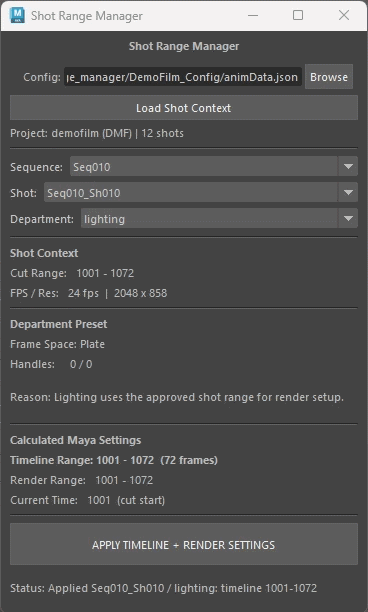
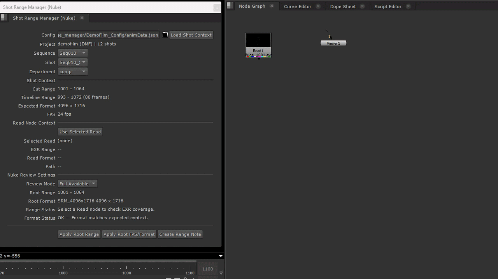

Demo
Overview
Shot Range Manager is a small pipeline tool prototype built around a common production issue: the same shot can require different frame ranges depending on department context.
Animation may need extra handles for motion and ease-in/out. FX may need a wider working range for pre-roll and downstream review. Lighting or render may work from a cut-only range, while Nuke may be used either for cut review or full available source review.
Architecture
The tool is structured as a shared core with thin DCC adapters.
The core owns the range logic. Maya and Nuke do not reimplement the same calculations. They only consume the approved context and apply it in DCC-specific ways.
DCC-agnostic Python corescene settingsRead node reviewThis was the main design goal: adding another DCC should mean writing another thin adapter.
Example Case
For a demo film shot, the approved cut range is:
1001–1072Different departments produce different working contexts:
989–1084969–10841001–10721001–1072993–1080In Maya, the selected department controls the timeline and scene settings.
In Nuke, the same context is used to evaluate whether the selected Read node is suitable for cut review, full handle review, or missing required frames.
Maya Mode
Maya mode loads the shot context, lets the artist choose a group, shot, and department, then displays the approved range data.

- Maya mode displays approved shot context as read-only data. The department selection changes the calculated working range and render settings.
- Switching departments changes the timeline range, handles, FPS/resolution context, and reason for the preset.
Nuke Mode
Nuke mode uses the same shot context but focuses on Read node review instead of scene setup.

- Nuke mode compares the selected Read node against the approved shot context and separates Cut Review from Full Available review.
- The StickyNote summary records the shot context, Read node range, root range, root format, and status directly in the Nuke script.
Technical Breakdown
- The tool is built around a shared Python core that has no Maya or Nuke dependency. This core reads the shot configuration, looks up the selected shot and department, calculates cut range, timeline range, render range, handles, FPS, resolution, and builds a display context for the UI.
- The Maya side acts as a scene setup adapter. The UI displays the approved context as read-only information, then applies the selected department range to the Maya timeline, render range, FPS, and render resolution.
- The Maya timeline is set to the working range, which includes cut range plus handles. The render range is kept on the cut range only. This separates the artist’s working context from the actual render frame range.
- The Nuke side uses the same shared core but applies it differently. Since Nuke consumes rendered EXRs, the Nuke adapter reads the selected Read node’s available frame range and format, compares that against the approved shot context, and sets the root range for review.
- Nuke review is split into two modes. Cut Review sets the root range to the approved cut range, which may use for dailies or review. Full Available uses the selected Read node’s available range, which is useful when checking handles or source coverage.
What I Learned
This project helped me think more clearly about the difference between a tool and a system. A frame range tool can look simple on the surface, but the underlying responsibility boundaries matter.
The most important design decision was separating the shared range logic from DCC-specific behaviour. Maya and Nuke use the same shot context, but they should not behave the same way. Maya prepares a scene before rendering. Nuke interprets rendered media after the fact.
Limitations
This is a prototype and does not connect to ShotGrid or a real studio publish database. The local JSON file is only used as a mock shot-context provider.